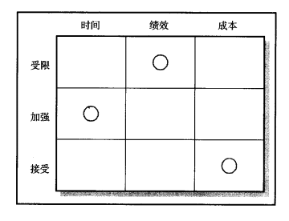
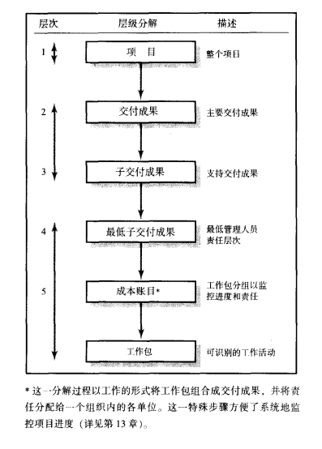

(Chinese) Reading Note of Project Management: The Managerial Process (2nd Edition), written by Clifford F. Gray and Erik W. Larson
第四章：项目定义(Work Breakdown Structure, WBS)
第一步：定义项目范围
目标:使Scope Statement完全
称呼
- Statement of Work, or
SOW - Project Chapter
项目范围检查表
- 项目目标
- 可交付成果：项目life cycle内的Expect Output
- Milestone: 项目在某一点上发生的一件突出事件，使用可交付成果
- 技术要求
- 限制与排除条件
- 与客户共同检查
第二步： 建立项目优先级
Priority Matrix
- 哪些需要受限：工期，规格，项目范围，预算要求
- 哪些需要加强： 绩效
- 哪些可以接受？

第三步：创立工作分解结构 （WBS)

定义Working Package
- 干什么
- 多长时间完成
- 成本
- 数量
- 负责人
- 监控点